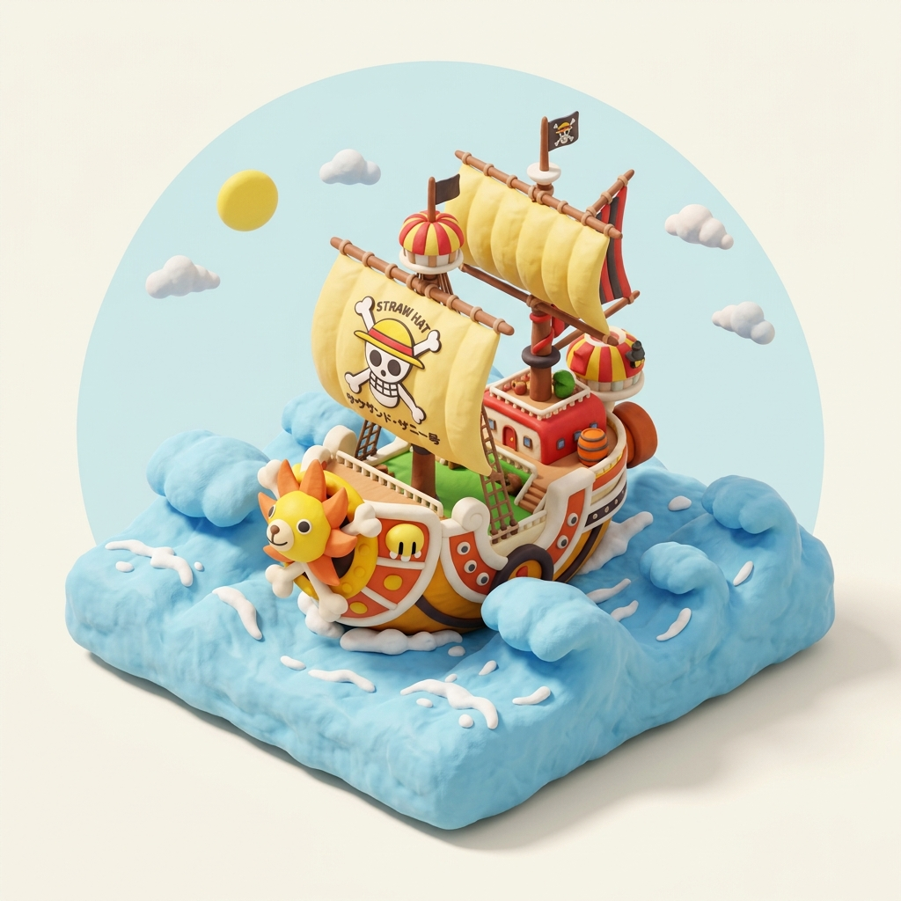
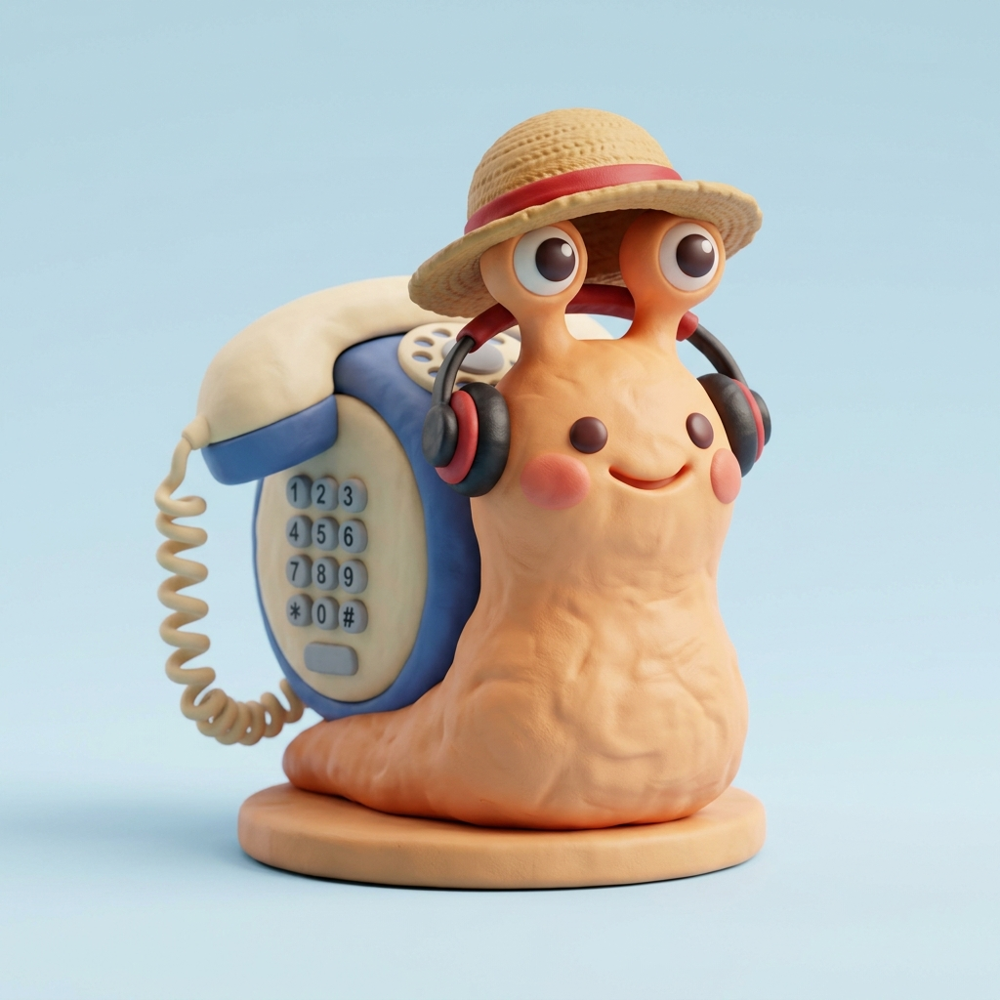

A minimal open-source personal AI agent system inspired by OpenClaw. Manipulate code, plan roadmaps, and conquer tasks through an interactive CLI or remote Telegram bot.
This is the exact terminal interface ClawNest renders upon running clawnest wakeup. No mockups
or hallucinated text.

Switch between authentic CLI mode sessions below:
Every pirate crew needs specialists. ClawNest splits specialized capabilities into dedicated operational modes.
Takes high-level coding goals, navigates files, executes shell commands, and prepares staged diffs for your clearance.
Charts the Grand Line for complex features. Breaks massive tasks into manageable, milestone-oriented execution steps.
Uncovers the secrets of your repository. Explains architecture, dependency graphs, and historical design patterns.
Issue commands from your smartphone anywhere in the world. Receive real-time progress pings and approve code diffs on the go.
Zero friction, pure terminal velocity. Built with Clack prompts and Chalk for developers who love staying in the shell.
Unlike wild AI agents that modify code without consent, ClawNest follows strict pirate honor:
Everything you need to configure your vessel, setup API credentials, and navigate ClawNest like a veteran pirate captain.
Run this in PowerShell (Windows) or Terminal
(macOS/Linux). It automatically prepares Bun and sets up the clawnest global command:
Navigate to your ClawNest directory (or current workspace) and copy the example environment file:
Add your free OpenRouter API key so the AI models can generate plans and write code for you.
Open any terminal in your project workspace and run:
Select CLI to start chatting with Agent, Plan, or Ask mode!
ClawNest reads configuration from a .env file in the project root or user home directory.
Displays the ANSI Shadow banner and launches the interactive TUI mode picker.
Autonomous code modification. Inspects files, creates diffs, and waits for your confirmation before touching code.
Researches codebase context and web documentation to
generate phased, milestone-driven technical roadmaps in plan.md.
Pairs with a Telegram bot so you can monitor agent progress and approve staged diffs right from your smartphone.
Run this command in PowerShell to temporarily allow install scripts for your current session:
Restart your terminal window so the updated user PATH takes effect, or ensure
$HOME\.local\bin (or ~/.bun/bin) is in your environment PATH.
Yes! The installer uses Git to fetch the latest ClawNest logbook and tools from GitHub. Download Git from git-scm.com if you don't have it installed.